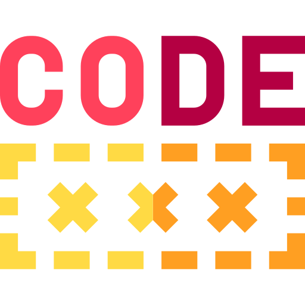
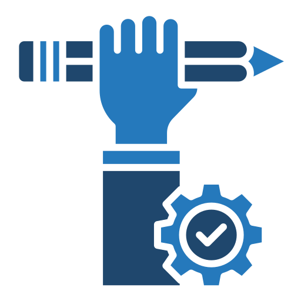

Welcome to My Academic Site
MedInnovate | EvolveHealth | InspireBio
About Me
I am Renjie(Rayn Jay) Mei, a potential enthusiastic researcher and developer specializing in Brain Computer Interface and Flexible Electrode. With a strong academic background and hands-on experience in cutting-edge technologies, I strive to bridge the gap between theory and practice.
Currently, I am pursuing my Undergraduate degree in Intelligent Medical Engineering at The Southern University of Science and Technology, China. My study focuses on metal-polymer electrodes for biomedical applications and signal processing techniques to enhance medical device performance. I am particularly interested in developing innovative solutions for wearable health technologies and neural interfaces.
Outside of academia, I enjoy photography, ping-pong, snooker (mostly watching the games), and exploring the intersection of technology and art. I believe that creativity and curiosity are the driving forces behind meaningful innovation.
Research Interests
-
 Brain Computer Interface
Brain Computer Interface
-
 Wearable Devices
Wearable Devices
-
 Neuroscience, especially Vision
Neuroscience, especially Vision
-
 Organoid, especially Brain
Organoid, especially Brain
My Skills
Skills & Softwares
-  Coding: Python, Java, Matlab, LaTex, to be learned.
-  Hands-on: MPC Fabrication, Electrochemical Analysis, to be learned.
-
 3D Modeling: Blender, Solidwork, Creo, to be learned.
3D Modeling: Blender, Solidwork, Creo, to be learned.
-
 Design: PS, AI, to be learned.
Design: PS, AI, to be learned.
Education Background

Bachelor of Biomedical Engineering, specifically Intelligent Medical Engineering
Southern University of Science and Technology, China | 2022 - 2026
Pursuing